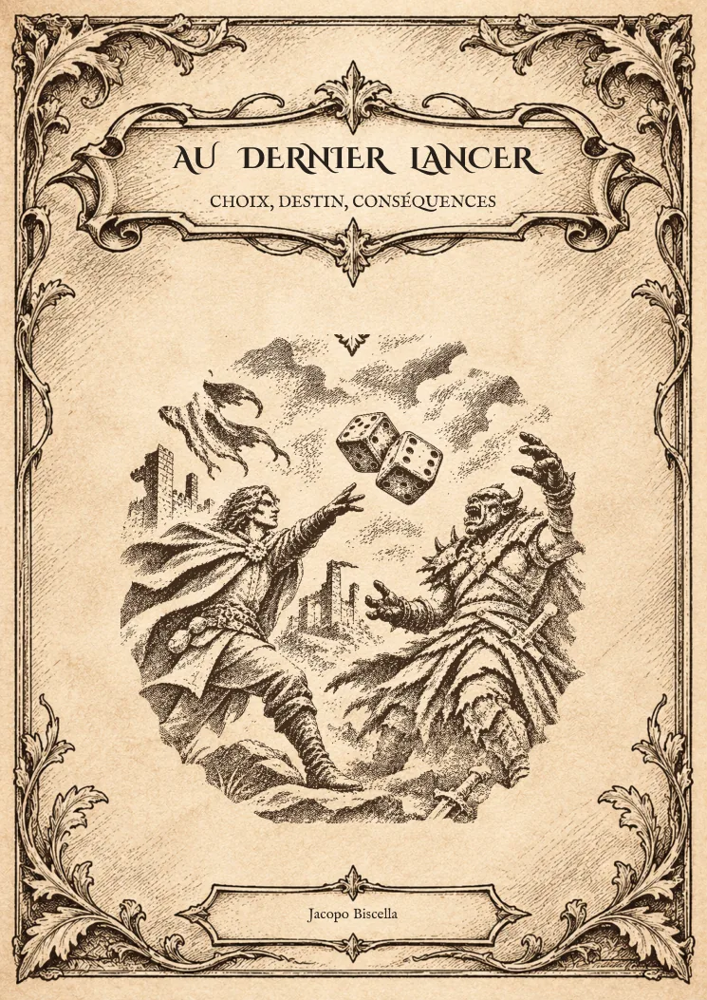

Une mécanique pour toutes les actions
Combat, discrétion, persuasion et magie reposent sur un même système de jet.
Un jeu de Jacopo Biscella
Un jeu de rôle fantasy épuré, fondé sur des dés à six faces, des actions décisives et des conséquences concrètes. Créez un Protagoniste, faites des choix et laissez l’histoire réagir.

Dés ordinaires · 2d6+
✧Ni initiative rigide ni grille
✧Des choix aux conséquences réelles
Des dés ordinaires à six faces, quatre Caractéristiques et un monde de possibilités. Les actions se résolvent avec des dés à six faces ; Compétences et circonstances modifient les jets.
Le combat est une conversation structurée, sans initiative rigide ni grille. La magie comporte des risques et un échec Critique demande une nouvelle approche.
Un jeu de rôle pour celles et ceux qui n’ont pas le temps de jouer aux jeux de rôle.
Vous avez peu de temps, mais vous voulez encore inventer des histoires autour d’une table. Prenez une fiche, lancez des dés à six faces ordinaires et faites des choix qui comptent.
Combat, discrétion, persuasion et magie reposent sur un même système de jet.
Ni initiative rigide ni quadrillage : décrivez votre action, lancez les dés et assumez les conséquences.
Les grimoires ont un coût et un contrecoup : un échec peut toucher tout le groupe.
Découvertes, failles personnelles et choix déterminants font avancer les personnages, sans accumulation de points d’expérience.
Blessures et fatigue utilisent une réserve commune : magie, efforts extrêmes et attaques vous rendent vulnérable.
Seuls des dés ordinaires à six faces (d6) sont nécessaires : ni dés spéciaux ni lot fixe. Lancez le nombre de dés requis et comparez le résultat à une valeur cible.
| Niveau | Jet |
|---|---|
| Novice | 2d6 — gardez le plus faible |
| Compétent | 1d6 |
| Expert | 2d6 — gardez le plus élevé |
Deux 6 ou plus constituent un Critique. Après un échec Critique, il faut changer réellement la situation avant de recommencer. L’Effort ajoute un dé au prix d’une blessure de fatigue.
Les règles de base sont complètes et jouables. Le jeu est en développement actif ; les retours sont bienvenus.
Lire les règles
{{ adventure_ui.adventure }}
{{ adventure_ui.titleline }}